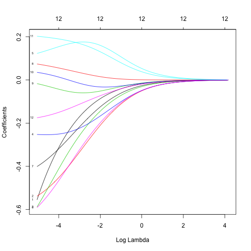

Jak regularyzować modele regresyjne?
Jak widzieliśmy w rozdziale Wybór modelu, gdy liczba zmiennych w modelu jest duża (p >> n) należy spodziewać się przeuczenia modelu.
Przeuczenie w terminologii statystycznej oznacza dużą wariancję estymatora przy małym błędzie na zbiorze uczącym.
Co zrobić by się nie przeuczać? Standardowo dla modeli regresyjnych stosuje się trzy strategie:
- Wybór zmiennych (subset selection), np. z użyciem kryteriów AIC/BIC/jednowymiarowe filtrowanie.
- Stosowanie regularyzacji opartej o karę za wielkość współczynników w modelu,
- Redukcja wymiaru zmiennych predykcyjnych przez zastosowanie techniki PCA/PCR.
Poniżej omówimy te strategie jedna po drugiej.
Wybór podzbioru zmiennych
Jednym ze sposobów zmniejszenia wariancji modelu regresyjnego jest budowanie go na mniejszej liczbie zmiennych.
Jak wyznaczyć tę mniejszą liczbę zmiennych?
- Można wybrać model o najniższej wartości kryterium AIC
- Można wybrać model o najniższej wartości kryterium BIC
- Można wybrać model tylko ze zmiennymi o zależności o istotności niższej niż $\alpha$.
load(url("https://github.com/pbiecek/StatystykaII/raw/master/MIMUW_2016/materialy/brca.rda"))
brcaSmall <- brca[,c(1, 5:10, 92:97)]
Pełny przegląd modeli. Dla każdego modelu wyznaczamy AIC i BIC.
library("e1071")
library("ggplot2")
comb <- bincombinations(ncol(brcaSmall)-1)[-1,]
crit <- matrix(0, nrow(comb), 3)
for (i in 1:nrow(comb)) {
vnames <- colnames(brcaSmall)[which(comb[i,]==1)]
form <- paste0("outcome~", paste0(vnames, collapse="+"))
model <- glm(as.formula(form), data=brcaSmall, family="binomial")
crit[i,1] <- AIC(model)
crit[i,2] <- BIC(model)
crit[i,3] <- sum(comb[i,]==1)
}
colnames(crit) <- c("AIC", "BIC","p")
crit <- data.frame(crit)
Porównujemy wszystkie modele z modelem wybranym przez funkcję step().
Czerwona kropka to model optymalny, zielona to model wybrany przez funkcję step().
bestStepBIC <- step(glm(outcome~., data=brcaSmall, family="binomial"), trace = 0, k = log(nrow(brcaSmall)))
ggplot(crit, aes(p,BIC)) +
geom_point() +
geom_point(data=crit[which.min(crit$BIC),], color="red", size=5) +
geom_point(data=crit[crit$BIC == BIC(bestStepBIC) &
crit$p == length(bestStepBIC$coefficients)-1,], color="green3", size=3) + scale_x_continuous(breaks = 1:12) + ggtitle("Najlepszy model względem BIC")

Porównujemy wszystkie modele z modelem wybranym przez funkcję step().
Czerwona kropka to model optymalny, zielona to model wybrany przez funkcję step().
tmpFun = function(fit, aic) {
list(size = length(fit$coefficients), aic = AIC(fit))
}
bestStepAIC <- step(glm(outcome~., data=brcaSmall, family="binomial"),keep=tmpFun, trace = 0)
pathDF <- data.frame(size = unlist(bestStepAIC$keep[1,]),
aic = unlist(bestStepAIC$keep[2,]))
ggplot(crit, aes(p,AIC)) +
geom_point() +
geom_point(data=crit[which.min(crit$AIC),], color="red", size=5) +
geom_point(data=crit[crit$AIC == AIC(bestStepAIC) &
crit$p == length(bestStepAIC$coefficients)-1,], color="green3", size=3) +
geom_line(data=pathDF, aes(size-1, aic), color="blue") +
scale_x_continuous(breaks = 1:12) + ggtitle("Najlepszy model względem AIC")

Regularyzacja
Innym sposobem ograniczenia wariancji modelu regresyjnego jest ograniczenie wartości współczynników tego modelu.
Ograniczać można normę $L_2$ wektora współczynników (rozwiązanie znane pod nazwą regresja grzbietowa) lub normę $L_1$ wektora współczynników (rozwiązanie znane pod nazwą LASSO) lub mieszaninę tych norm (rozwiązanie znane pod nazwą sieci elastycznych).
Lasso
Dla normy $L_1$ wyznacza się estymator $\hat\beta$ ograniczony przez wartość $s$
Równoważnie można ten estymator wyznaczyć przez minimalizację funkcji log wiarogodności z dodaną karą za wielkość współczynników.
Pomiędzy parametrami $\alpha$ i $s$ istnieje zależność 1-1.
Uwaga 1:
Współczynniki $\hat\beta_{lasso}$ mogą przyjmować wartość 0.
Regresja grzbietowa
Dla regresji grzbietowej wzór na estymator współczynników ma postać
W modelu gaussowskim funkcja log-wiarogodności jest proporcjonalna do RSS, mamy więc
Ten estymator można wyznaczyć w sposób analityczny
Elastic net
Dla metody elastic net, kara ma dwie składowe oparte o metrykę $L_1$ i $L_2$.
Uwaga 1:
Aby współczynniki $\beta$ można było wspólnie ograniczać, trzeba wcześniej standaryzować macierz $X$.
Jak to zrobić w R?
library("glmnet")
X <- as.matrix(brcaSmall[,-1])
X <- scale(X)
model <- glmnet(x = X, y = brcaSmall$outcome == "death in 3 years", alpha=0, family="binomial")
plot(model, xvar = "lambda", label = TRUE)

model <- glmnet(x = X, y = brcaSmall$outcome == "death in 3 years", alpha=1, family="binomial")
plot(model, xvar = "lambda", label = TRUE)

cvfit = cv.glmnet(x = X, y = brcaSmall$outcome == "death in 3 years", alpha=1, family="binomial")
plot(cvfit)

coef(cvfit, s = "lambda.min")
## 13 x 1 sparse Matrix of class "dgCMatrix"
## 1
## (Intercept) -2.35487481
## ADAM29 -0.34967342
## ALKBH1 -0.52442702
## CLIC6 -0.51475641
## CTSO -0.19908113
## EIF2B3 0.10576319
## ENTPD1 -0.61199370
## ICAM3 -0.34654417
## LRP2 0.01954816
## FCGR1B .
## ABI3BP .
## LOC284837 0.18055607
## EMR3 -0.07480810
Więcej instrukcji na stronie https://web.stanford.edu/~hastie/glmnet/glmnet_alpha.html
PCR - Principal component regression
Metoda PCR to złożenie regresji i metody PCA.
W pierwszym kroku redukuje się wymiar - liczbę zmiennych przez wykonanie PCA (Principal component analysis).
Następnie buduje się model regresyjny na nowych zmiennych.
W programie R można tę regresję przeprowadzić funkcją pcr{pls}.